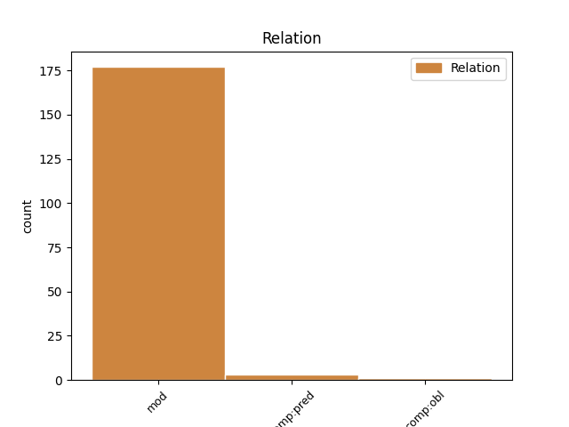
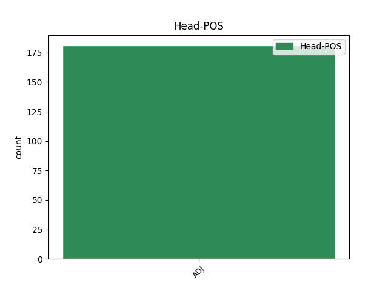
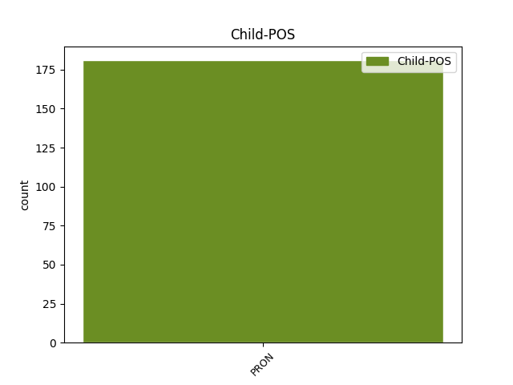

Distribution of features within this leaf



Agreement Rules sorted by frequency.
- When the dependent token is the modifer(mod) of the head token, and the head token is ADJ and the dependent token is PRON.
1 πλείστων _ _ _ _ 0 _ _ _
2 δὲ _ _ _ _ 0 _ _ _
3 εἰς _ _ _ _ 0 _ _ _
4 τὸ _ _ _ _ 0 _ _ _
5 δημόσιον _ _ _ _ 0 _ _ _
6 ἀνενεχθέντων _ _ _ _ 0 _ _ _
7 , _ _ _ _ 0 _ _ _
8 οὗτοι _ _ _ _ 0 _ _ _
9 μὲν _ _ _ _ 0 _ _ _
10 τοὺς _ _ _ _ 0 _ _ _
11 λίθους _ _ _ _ 0 _ _ _
12 ἔτεμνον _ _ _ _ 0 _ _ _
13 , _ _ _ _ 0 _ _ _
14 ἐξ _ _ _ _ 0 _ _ _
15 ὧν _ _ _ _ 0 _ _ _
16 οὐ _ _ _ _ 0 _ _ _
17 μόνον _ _ _ _ 0 _ _ _
18 οἱ _ _ _ _ 0 _ _ _
19 μέγιστοι _ _ _ _ 0 _ _ _
20 τῶν _ _ _ _ 0 _ _ _
21 θεῶν _ _ _ _ 0 _ _ _
22 ναοὶ _ _ _ _ 0 _ _ _
23 κατεσκευάσθησαν _ _ _ _ 0 _ _ _
24 , _ _ _ _ 0 _ _ _
25 ἀλλὰ _ _ _ _ 0 _ _ _
26 καὶ _ _ _ _ 0 _ _ _
27 πρὸς _ _ _ _ 0 _ _ _
28 τὰς _ _ _ _ 0 _ _ _
29 τῶν _ _ _ _ 0 _ _ _
30 ὑδάτων _ _ _ _ 0 _ _ _
31 ἐκ _ _ _ _ 0 _ _ _
32 τῆς _ _ _ _ 0 _ _ _
33 πόλεως _ _ _ _ 0 _ _ _
34 ἐκροὰς _ _ _ _ 0 _ _ _
35 ὑπόνομοι ὑπόνομος ADJ a-p---mn- Case=Nom|Gender=Masc|Number=Plur 0 _ _ _
36 κατεσκευάσθησαν _ _ _ _ 0 _ _ _
37 τηλικοῦτοι τηλικοῦτος PRON p-p---mn- Case=Nom|Gender=Masc|Number=Plur 35 mod _ _
38 τὸ _ _ _ _ 0 _ _ _
39 μέγεθος _ _ _ _ 0 _ _ _
40 , _ _ _ _ 0 _ _ _
41 ὥστε _ _ _ _ 0 _ _ _
42 ἀξιοθέατον _ _ _ _ 0 _ _ _
43 εἶναι _ _ _ _ 0 _ _ _
44 τὸ _ _ _ _ 0 _ _ _
45 κατασκεύασμα _ _ _ _ 0 _ _ _
46 , _ _ _ _ 0 _ _ _
47 καίπερ _ _ _ _ 0 _ _ _
48 διὰ _ _ _ _ 0 _ _ _
49 τὴν _ _ _ _ 0 _ _ _
50 εὐτέλειαν _ _ _ _ 0 _ _ _
51 καταφρονούμενον _ _ _ _ 0 _ _ _
52 . _ _ _ _ 0 _ _ _
1 καὶ _ _ _ _ 0 _ _ _
2 αὐτὸς αὐτός PRON p-s---mn- Case=Nom|Gender=Masc|Number=Sing 6 comp:pred _ _
3 ὦ _ _ _ _ 0 _ _ _
4 Μάγοι _ _ _ _ 0 _ _ _
5 ταύτῃ _ _ _ _ 0 _ _ _
6 πλεῖστος πλεῖστος ADJ a-s---mn- Case=Nom|Gender=Masc|Number=Sing 0 _ _ _
7 γνώμην _ _ _ _ 0 _ _ _
8 εἰμί _ _ _ _ 0 _ _ _
9 , _ _ _ _ 0 _ _ _
10 βασιλέος _ _ _ _ 0 _ _ _
11 ὀνομασθέντος _ _ _ _ 0 _ _ _
12 τοῦ _ _ _ _ 0 _ _ _
13 παιδὸς _ _ _ _ 0 _ _ _
14 ἐξήκειν _ _ _ _ 0 _ _ _
15 τε _ _ _ _ 0 _ _ _
16 τὸν _ _ _ _ 0 _ _ _
17 ὄνειρον _ _ _ _ 0 _ _ _
18 καί _ _ _ _ 0 _ _ _
19 μοι _ _ _ _ 0 _ _ _
20 τὸν _ _ _ _ 0 _ _ _
21 παῖδα _ _ _ _ 0 _ _ _
22 τοῦτον _ _ _ _ 0 _ _ _
23 εἶναι _ _ _ _ 0 _ _ _
24 δεινὸν _ _ _ _ 0 _ _ _
25 ἔτι _ _ _ _ 0 _ _ _
26 οὐδέν _ _ _ _ 0 _ _ _
27 . _ _ _ _ 0 _ _ _
Disagree Examples:
1 καὶ _ _ _ _ 0 _ _ _
2 μακάριον _ _ _ _ 0 _ _ _
3 τὸν _ _ _ _ 0 _ _ _
4 βασιλέα _ _ _ _ 0 _ _ _
5 ἀπεκάλουν _ _ _ _ 0 _ _ _
6 ὅτι _ _ _ _ 0 _ _ _
7 ἔξεστιν _ _ _ _ 0 _ _ _
8 αὐτῷ _ _ _ _ 0 _ _ _
9 τούτων _ _ _ _ 0 _ _ _
10 ἀπολαύειν _ _ _ _ 0 _ _ _
11 , _ _ _ _ 0 _ _ _
12 καὶ _ _ _ _ 0 _ _ _
13 ἕτερα _ _ _ _ 0 _ _ _
14 τούτοις οὗτος PRON p-p---nd- Case=Dat|Gender=Neut|Number=Plur 15 mod _ _
15 παραπλήσια παραπλήσιος ADJ a-p---na- Case=Acc|Gender=Neut|Number=Plur 0 _ _ _
16 πάνυ _ _ _ _ 0 _ _ _
17 πολλὰ _ _ _ _ 0 _ _ _
18 τῶν _ _ _ _ 0 _ _ _
19 φορτικῶν _ _ _ _ 0 _ _ _
20 ἐποίουν _ _ _ _ 0 _ _ _
21 . _ _ _ _ 0 _ _ _
1 ἐμφανίζει _ _ _ _ 0 _ _ _
2 δ̓ _ _ _ _ 0 _ _ _
3 ὑμῶν σύ PRON p2p---mg- Case=Gen|Gender=Masc|Number=Plur|Person=2 6 mod _ _
4 καὶ _ _ _ _ 0 _ _ _
5 τὸ _ _ _ _ 0 _ _ _
6 ἀνόητον ἀνόητος ADJ a-s---na- Case=Acc|Gender=Neut|Number=Sing 0 _ _ _
7 Ἀνάξιππος _ _ _ _ 0 _ _ _
8 ὁ _ _ _ _ 0 _ _ _
9 κωμῳδιοποιὸς _ _ _ _ 0 _ _ _
10 ἐν _ _ _ _ 0 _ _ _
11 Κεραυνουμένῳ _ _ _ _ 0 _ _ _
12 λέγων _ _ _ _ 0 _ _ _
13 οὕτως _ _ _ _ 0 _ _ _
14 · _ _ _ _ 0 _ _ _
1 ὧν ὅς PRON p-p---ng- Case=Gen|Gender=Neut|Number=Plur 2 mod _ _
2 οὐδέτερον οὐδέτερος ADJ a-s---nn- Case=Nom|Gender=Neut|Number=Sing 0 _ _ _
3 πρόσεστιν _ _ _ _ 0 _ _ _
4 ὑμῖν _ _ _ _ 0 _ _ _
5 τοῖς _ _ _ _ 0 _ _ _
6 τὸν _ _ _ _ 0 _ _ _
7 κυνικὸν _ _ _ _ 0 _ _ _
8 βίον _ _ _ _ 0 _ _ _
9 μιμουμένοις _ _ _ _ 0 _ _ _
10 . _ _ _ _ 0 _ _ _
1 οὐκ _ _ _ _ 0 _ _ _
2 ἂν _ _ _ _ 0 _ _ _
3 ποτ̓ _ _ _ _ 0 _ _ _
4 ᾠήθην _ _ _ _ 0 _ _ _
5 , _ _ _ _ 0 _ _ _
6 ὦ _ _ _ _ 0 _ _ _
7 ἄνδρες _ _ _ _ 0 _ _ _
8 δικασταί _ _ _ _ 0 _ _ _
9 , _ _ _ _ 0 _ _ _
10 Αἰσχίνην _ _ _ _ 0 _ _ _
11 τολμῆσαι _ _ _ _ 0 _ _ _
12 οὕτως _ _ _ _ 0 _ _ _
13 αἰσχρὰν _ _ _ _ 0 _ _ _
14 δίκην _ _ _ _ 0 _ _ _
15 δικάσασθαι _ _ _ _ 0 _ _ _
16 , _ _ _ _ 0 _ _ _
17 νομίζω _ _ _ _ 0 _ _ _
18 δ̓ _ _ _ _ 0 _ _ _
19 οὐκ _ _ _ _ 0 _ _ _
20 ἂν _ _ _ _ 0 _ _ _
21 ῥᾳδίως _ _ _ _ 0 _ _ _
22 αὐτὸν _ _ _ _ 0 _ _ _
23 ἑτέραν _ _ _ _ 0 _ _ _
24 ταύτης οὗτος PRON p-s---fg- Case=Gen|Gender=Fem|Number=Sing 25 mod _ _
25 συκοφαντωδεστέραν συκοφαντώδης ADJ a-s---fac Case=Acc|Degree=Cmp|Gender=Fem|Number=Sing 0 _ _ _
26 ἐξευρεῖν _ _ _ _ 0 _ _ _
27 . _ _ _ _ 0 _ _ _
1 ἐὰν _ _ _ _ 0 _ _ _
2 γὰρ _ _ _ _ 0 _ _ _
3 ἀμφίθρεπτον _ _ _ _ 0 _ _ _
4 αἷμα _ _ _ _ 0 _ _ _
5 τῶν _ _ _ _ 0 _ _ _
6 ἐμῶν _ _ _ _ 0 _ _ _
7 σφαγῶν _ _ _ _ 0 _ _ _
8 ἐνέγκῃ _ _ _ _ 0 _ _ _
9 χερσίν _ _ _ _ 0 _ _ _
10 , _ _ _ _ 0 _ _ _
11 ᾗ _ _ _ _ 0 _ _ _
12 μελαγχόλους _ _ _ _ 0 _ _ _
13 ἔβαψεν _ _ _ _ 0 _ _ _
14 ἰοὺς _ _ _ _ 0 _ _ _
15 θρέμμα _ _ _ _ 0 _ _ _
16 Λερναίας _ _ _ _ 0 _ _ _
17 ὕδρας _ _ _ _ 0 _ _ _
18 , _ _ _ _ 0 _ _ _
19 ἔσται _ _ _ _ 0 _ _ _
20 φρενός _ _ _ _ 0 _ _ _
21 σοι σύ PRON p-s---fd- Case=Dat|Gender=Fem|Number=Sing 23 mod _ _
22 τοῦτο _ _ _ _ 0 _ _ _
23 κηλητήριον κηλητήριος ADJ a-s---nn- Case=Nom|Gender=Neut|Number=Sing 0 _ _ _
24 τῆς _ _ _ _ 0 _ _ _
25 Ἡρακλείας _ _ _ _ 0 _ _ _
26 , _ _ _ _ 0 _ _ _
27 ὥστε _ _ _ _ 0 _ _ _
28 μήτιν̓ _ _ _ _ 0 _ _ _
29 εἰσιδὼν _ _ _ _ 0 _ _ _
30 στέρξει _ _ _ _ 0 _ _ _
31 γυναῖκα _ _ _ _ 0 _ _ _
32 κεῖνος _ _ _ _ 0 _ _ _
33 ἀντὶ _ _ _ _ 0 _ _ _
34 σοῦ _ _ _ _ 0 _ _ _
35 πλέον _ _ _ _ 0 _ _ _
36 . _ _ _ _ 0 _ _ _